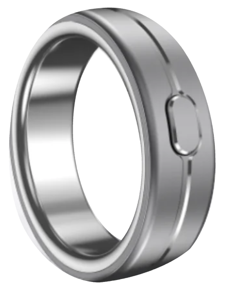

01 / 05 · PresenceVocci in everyday lifeStay with
A conversation worth keepingConversation excerpt · example
Capture conversations and ideas with a ring. Bring the context you choose into your AI workflow.
 A small gesture. A moment kept.
Real life is the starting point.
A small gesture. A moment kept.
Real life is the starting point.


A small gesture.
A moment kept.
A small, deliberate action starts the recording, right where your hand already is.


A considered shape and a button within reach, through the conversations and work of your day.
Your conversations are the beginning of something useful.
Start recording with a double-click. Keep the conversation or idea you choose, while staying present.

01 Your hand. Your decision.
A closer look at the process behind the ring.


Vocci is an AI ring for capturing conversations and ideas, then bringing the context you choose into your AI workflow.
Double-click the physical button on the ring to start recording.
Transcripts, summaries and action items help you return to the useful parts of a conversation.
Use selected context with connected tools you authorize. Visit the product site for available integrations and setup details.
The ring uses titanium inside and out and weighs 3–5 g depending on size. Check the product page for fit and care guidance.
Yes. A deliberate action starts recording, so you choose which conversation or thought to keep.
Vocci uses encryption on the device, permission-based access and user-controlled sync. See the Trust Center for current details.
You choose the content to use and authorize access to connected tools.
Visit the Vocci Ring product page for current pricing, availability and sizing.
Read the current shipping policy and return policy on the Vocci store.
Get in touch through the Vocci Support Center.